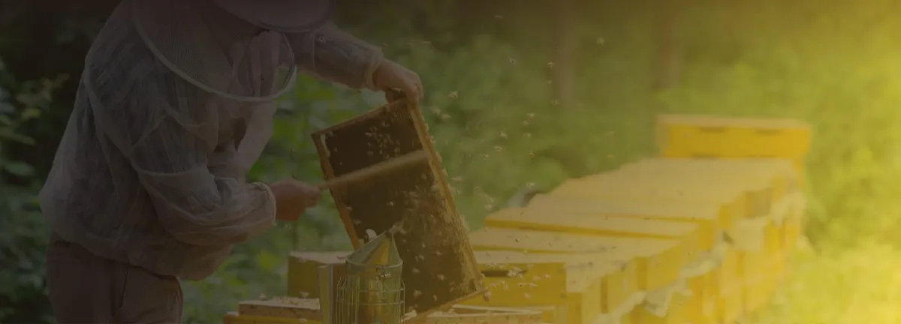
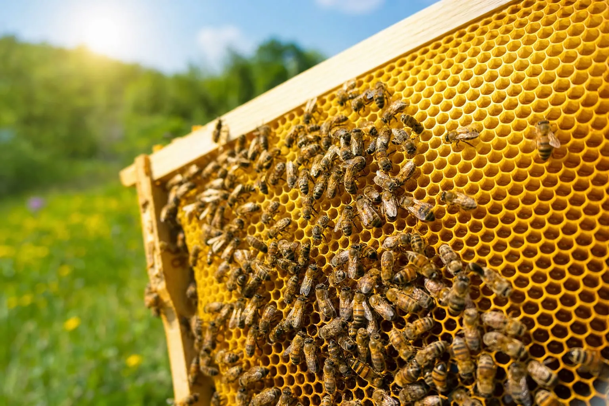

벌통 소리·진동으로 여왕벌 부재와 분봉 전조 읽는 연구
분봉 평균 22일 앞서 감지한 진동 연구, 1~3초 녹음의 여왕벌 판별 최고 정확도 약 73%

벌통이 내는 웅웅거림과 진동으로 꿀벌 무리(봉군)의 상태를 읽어 내려는 연구가 2020년 이후 국제 학술지에 잇따라 실렸다. 벌통을 열지 않고도 여왕벌이 없어졌는지, 분봉이 다가오는지를 미리 알아채려는 시도다. 분봉은 꿀벌 무리 일부가 여왕벌과 함께 집을 떠나는 일이다.
그동안의 연구는 정상 봉군이 내는 소리의 주파수 대역을 수치로 정리했다. 진동 신호로 첫 분봉을 평균 22일 앞서 경보한 결과도 나왔다. 1~3초짜리 짧은 녹음으로 여왕벌이 없는 벌통을 가려낸 연구의 최고 정확도는 약 73%였다.
웅웅거림에 담긴 신호
Kanelis 등은 2023년 학술지 ‘바이올로지(Biology)’에 실은 논문에서 선행연구를 인용해, 일벌이 내는 웅웅거림이 255±35Hz라고 소개했다. 헤르츠(Hz)는 1초에 떨리는 횟수를 나타낸다. 논문은 벌통에서 나는 소리가 대부분 100~1,000Hz 대역에 있다는 선행연구들도 함께 인용했다. Kanelis 등이 직접 한 실험에서는 여왕벌이 없는 봉군, 곧 무왕군에서 낮은 주파수 성분이 강해졌다.

그래픽: 벌집틀을 빽빽하게 덮은 꿀벌들 (AI로 만든 이미지, BeeAI 홍보용)짧은 녹음으로 여왕벌 유무를 가려낸 연구도 있다. Ormeño-Arriagada 등은 독일과 칠레 등에서 모은 녹음을 1~3초 길이로 잘라 기계학습 모델로 여왕벌 유무를 판별했다. 이 연구는 2026년 5월 학술지 ‘인섹츠(Insects)’에 실렸다. 도시 소음이 섞인 녹음으로 시험한 결과, 가장 높은 정확도는 약 73%였다. 판별 10건 가운데 3건 가까이 틀린 셈이다. 연구진은 1~3초 녹음에도 판별에 필요한 정보가 담겨 있어, 소음이 어느 정도 있는 도시 환경에서도 실시간 관찰에 쓸 수 있다고 결론지었다.
분봉 22일 전의 진동
Ramsey 등은 진동으로 분봉 조짐을 잡았다. 2020년 학술지 ‘사이언티픽 리포츠(Scientific Reports)’에 발표한 연구에서 진동 센서 신호로 분봉하려는 봉군과 그렇지 않은 봉군을 91%의 정확도로 가려냈고 첫 분봉을 평균 22일 앞서 경보했다. 이 결과는 진동 신호의 패턴을 기계학습으로 분류해 얻었다. 특정 주파수 하나를 기준선으로 삼은 방식은 아니다.
온도 센서와 함께 읽기
온도는 정상 범위가 비교적 분명하게 정리된 신호다. Stabentheiner 등은 2010년 학술지 ‘플로스 원(PLoS ONE)’에 실은 논문에서 선행연구를 인용해, 봉군이 육아권의 온도를 32~36℃로 스스로 조절한다고 소개했다. 육아권은 알과 애벌레, 번데기를 기르는 벌집 구역이다. 자라는 벌이 32℃ 아래 온도에 오래 노출되면 날개·다리·배에 기형이 생긴다.
Šabić 등은 스마트 벌통 기술을 다룬 논문 135편을 체계적 문헌고찰로 검토해 그 결과를 2025년 학술지 ‘센서스(Sensors)’에 실었다. 이들은 여러 센서의 정보를 합치면 견고성과 정확도가 높아진다는 이점은 입증됐지만 실제 현장에서 쓰인 사례는 드물다고 정리했다.
뉴질랜드 현장 실증
BeeAI(뉴질랜드 양봉 AI 해외실증) 사업은 이 같은 음향 분석을 현장에서 처리하는 방식을 뉴질랜드에서 실증한다. 분석은 벌통 현장에 두는 저전력 AI반도체 ‘Doksan’이 맡도록 설계됐다. 이 반도체는 인공지능 연산 전용 칩인 NPU로, 사업 참여사인 FYD가 설계했다. FYD는 반도체 설계를 전문으로 하는 국내 팹리스 기업이다. 사업 측은 이 칩이 클라우드 서버를 거치지 않고도 벌통 현장에서 소리를 분석하도록 설계됐다고 밝혔다. 마이크 외에 벌통 입구 카메라와 온도·습도·무게 센서도 함께 쓴다고 덧붙였다.
사업 측은 2026년 7월 홍보 자료에서 건강한 벌통 소리의 기준에서 벗어나는 변화를 AI가 찾아내 여왕벌 부재나 분봉 전조 같은 신호를 포착할 수 있다고 설명했다. 현장 판별 성능은 실증 중이다. 이 기사에 나온 73%, 91% 같은 수치는 모두 외부 연구 결과로 BeeAI의 성능이 아니다.
같은 자료에 따르면 사업 측은 2026년 8월 뉴질랜드에 장비 30세트를 1차로 설치하고 차례로 늘릴 계획이었다. 실증 대상은 뉴질랜드 양봉장 3곳의 벌통 50통, 기간은 6개월로 잡혀 있었다.
이 사업은 과학기술정보통신부와 정보통신산업진흥원(NIPA)의 「엣지형 AI반도체 기반 뉴질랜드형 지능형 양봉 솔루션 해외실증」 과제로 추진되고 있다.
자료: Kanelis 외(2023) Biology, Ormeño-Arriagada 외(2026년 5월) Insects, Ramsey 외(2020) Scientific Reports, Stabentheiner 외(2010) PLoS ONE, Šabić 외(2025) Sensors, BeeAI 사업 홍보 자료(2026년 7월), 비온팜 홈페이지 대표 사진(2026년 10월 8일 확인)
저작권자 © 윙윙통신 무단 전재 및 재배포 금지